Views, Dialogs and Toolbar
|
| DirectoryDialog on Windows now uses modern style |
The DirectoryDialog on Windows has been re-implemented to use the modern native widget introduced in Windows Vista.
The new look and feel is as illustrated below:
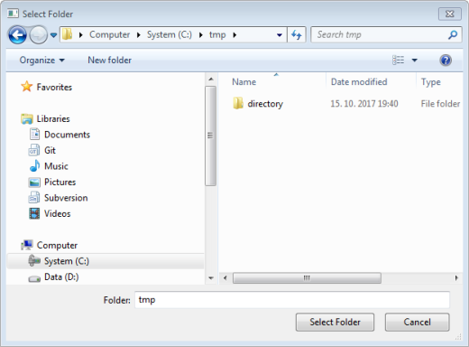
Regarding usage of newer DirectoryDialog on Windows:
In the old DirectoryDialog, there was an option to set a text message to specify the purpose of the DirectoryDialog using DirectoryDialog#setMessage(String).
This functionality is no more available with the newer DirectoryDialog.
Hence, you should revisit the usage of DirectoryDialog.setMessage(String) in your projects, and if needed elaborate the Title field of DirectoryDialog using DirectoryDialog.setText(String) method.
Note: It's recommended to use a minimal set of words in the Title field of DirectoryDialog and avoid making it look clumsy.
|
| Quick-Access matches Preference pages by keyword |
Quick-Access (Ctrl+3) now also returns Preference pages that have a keyword matching user
input.
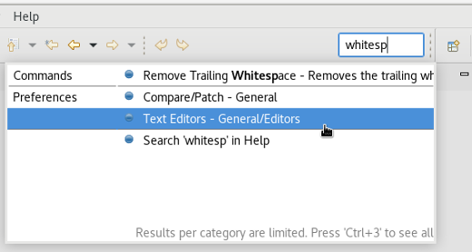
|
| Perfect matches appear first in selection dialogs |
Within selection dialogs, including Open Type and Open Resource, perfect matches appear as the first result, ensuring that users no longer have to scroll through historical matches and the alphabetically sorted list to find their desired result.
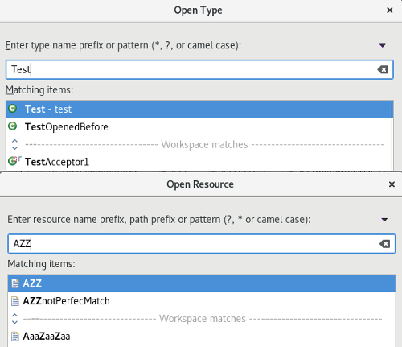
|
| Open resource dialog highlights matching characters |
The matching characters from the filter are now highlighted in the Open Resource dialog.
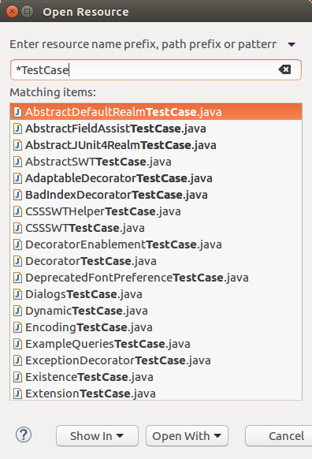
|
| Expanded highlighting in Open Resource Dialog |
The Open Resource dialog now shows you how the search term matches the found resources by highlighting the names based on camel-case and pattern ( * and ? ) searches.
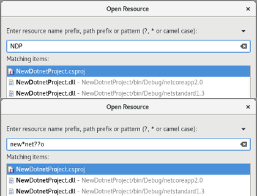
|
| Open resource dialog always shows the paths |
You can now use the Open Resource dialog to see the file paths.
Previously it only showed the paths if there were duplicate entries.
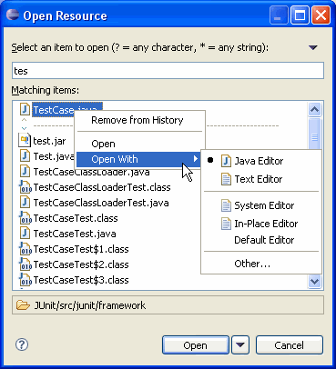
|
| Undo/Redo Toolbar Buttons |
The main Toolbar can now show Undo and Redo buttons.
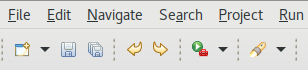
The buttons are not available by default. They can be added via Window > Perspective > Customize Perspective...
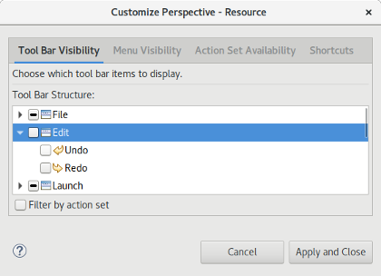
|
| Browser Editor can toggle auto-refresh |
The Browser Editor now contains a drop down option for enabling auto-refresh for local pages. When enabled, the Browser Editor will automatically refresh if the opened file is edited and saved.
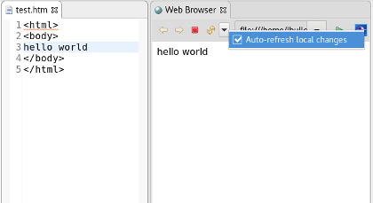
|
| Modify project natures |
The Project Properties dialog now features a page to add or remove natures on a project.
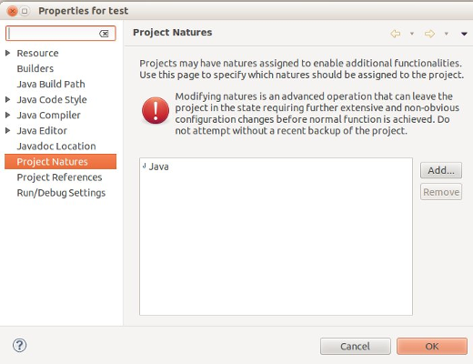
As mentioned on the page, some natures may not properly handle manual addition/removal, so using
this can lead to some inconsistencies in those cases.
|
| Open/Close Projects by Working Set in Project Explorer |
The ability to Open, Close, Close Unrelated, and Build all appropriate projects in a Working Set has been added to the right click menu of Working Sets in the Project Explorer.

|
| Close newly imported projects upon completion |
The Import Wizard offers you the option to close the newly imported projects upon completion of the import process.
This might be beneficial if you're importing many projects and/or some projects have time-consuming builders configured.
This affects the wizards reachable via File > Open Projects..., File > Import... > Existing Projects into Workspace
and File > Import > Projects from Folder or Archive
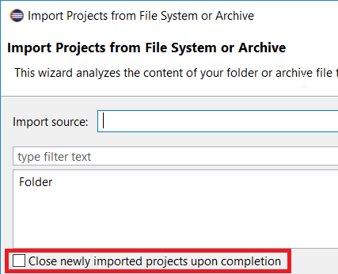
|
| Delete nested projects |
The Delete Resources dialog now shows a Delete nested projects option to delete all projects whose location on file system is a descendant of one of the selected projects.
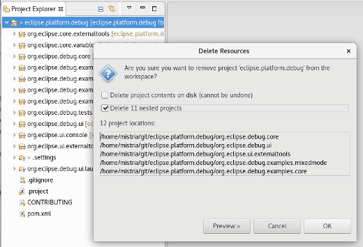
|
Editors
|
| Improve readability of default text font on macOS |
Reading the source code is the task developers perform the most during coding. So text editors must assist the user as good as possible with that.
Up to now Eclipse running on macOS used the font "Monaco" as the default text editor font. This font does not contain a bold font face. But a lot of source code editors render keywords in the bold font face. With "Monaco" this feature was not available.
Before:
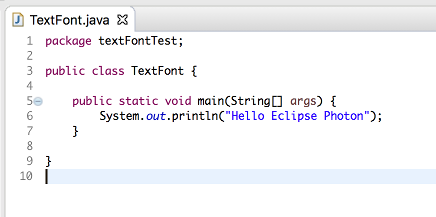
On macOS Eclipse Photon now uses the "Menlo" font as the default text font, which does also contain bold font faces. This increases readability in source code editors using bold font faces.
After:
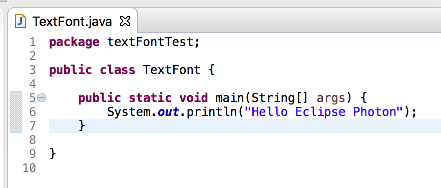
|
| Improved caret performance on GTK3 |
Caret performance on the SWT GTK3 port has been enhanced to allow for smoother
drawing. Previously the caret stuttered when moved or when other controls in the same
shell were manipulated. Now the caret moves smoothly and blinks at a consistent rate.
|
Debug
|
| Debug perspective layout changed |
Default Debug Perspective layout has changed, see screenshot below.
The aim is to give the editor area more space and to show more relevant information without scrolling.
Display View, Expressions View and Project Explorer are now shown by default, Problems View replaces Tasks.
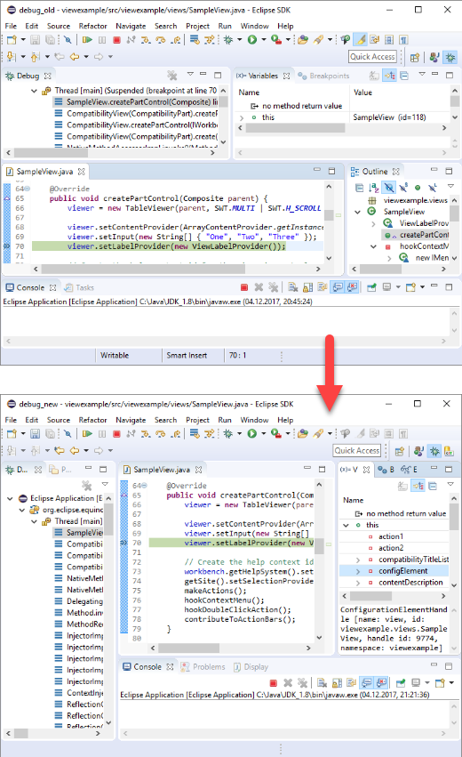
|
| Right click option to export Launch Configurations |
The Export Launch Configurations Wizard is now accessible through the right click menu on Launch Configurations. This wizard is still available with File > Export > Run/Debug > Launch Configurations

|
| Workers use job names as thread names |
The Jobs Framework now uses Job names for Worker thread names.
Previously all running Worker's got enumerated thread names, without any hint what the
current Worker is actually doing:
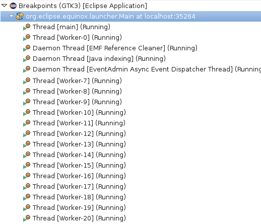
Now the Job name is added
next to the Worker name:
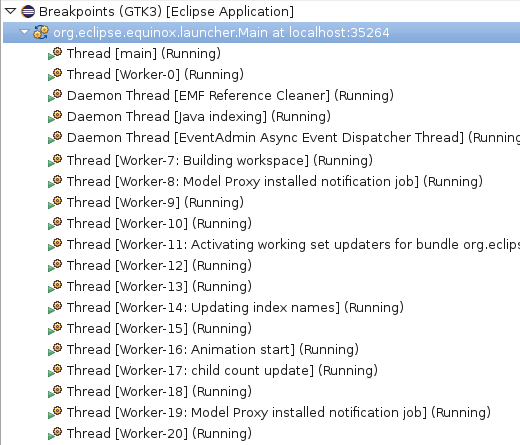
|
Preferences
|
| Manage associations of content types with editors |
The Content Types Preference page has been extended to allow you to view, create and
remove associations with editors.
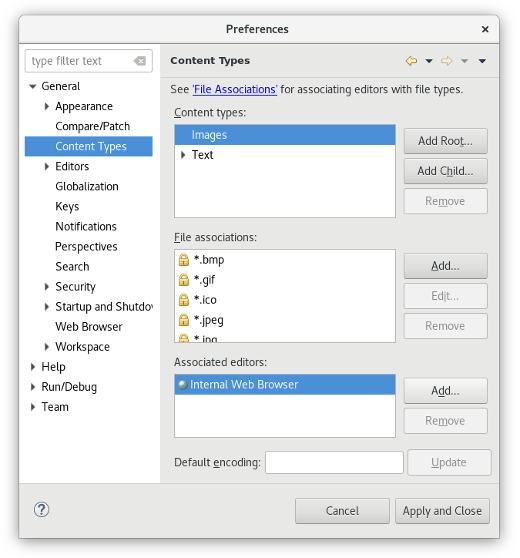
Using the content type to define editor association is to be preferred over using the File Associations
preferences.
|
| Associate content type with a file name pattern |
From the Preferences > General > Content Types preference page, you can now
associate a content type with a file name pattern and use ? or * wildcards at any place in that pattern
(respectively to match any character or any string).
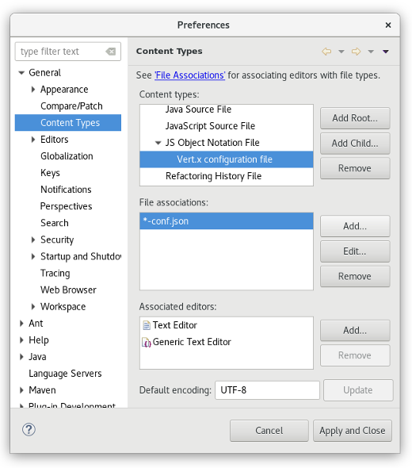
|
| Allow workspace to build projects in parallel |
The Workspace preference page now has a new option to allow the workspace to build projects in parallel:
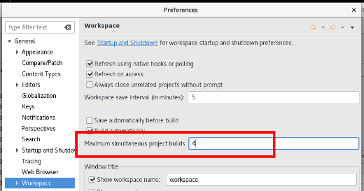
Under some safe circumstances, the workspace can now choose to build independent projects in parallel. In such
case, the maximum amount of jobs/threads that will be running builds in parallel will be controlled by this preference. A value of
1 will indicate that build won't be parallelized keeping the legacy behavior.
The optimal value will depend on the machine and workspace projects specificities. Recommendation is to try relatively
low values (such as 4) first which will allow to save time, when allowed by projects, while not risking
the CPU overload.
|
| Report reference to missing nature as error marker |
| Export command id of key bindings to CSV |
On the Keys preference page the Export CSV action exports additionally the command id for key bindings.
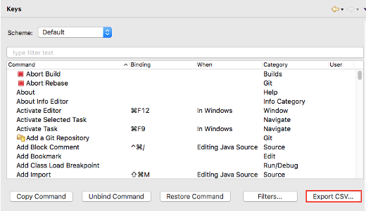
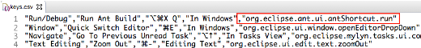
|
| Import/export preferences from preference dialog |
Easily accessible buttons for opening the Import/Export preferences wizards have been added to the lower left corner of the Preferences dialog. The wizards are still accessible through the File > Import... and File > Export... wizards.
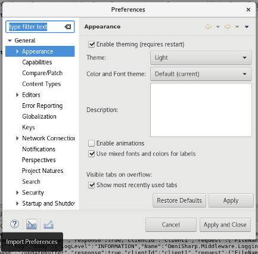
|
Themes and Styling
|
| Animated waiting cursor on macOS |
During long running UI actions the cursor switches to a waiting cursor. On macOS, this used to be a static black/white circle.
In Eclipse Photon the macOS system's busy cursor is changed to a spinning blue ball (also called beach ball).
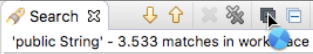
|
| Configure the color of text editor's range indicator |
The Text Editor's range indicators's color can now be configured via the Colors and Fonts preference page.

|
| Styling for text editor's range indicator |
The Eclipse default dark theme now includes styling for the Text Editor's range indicator.
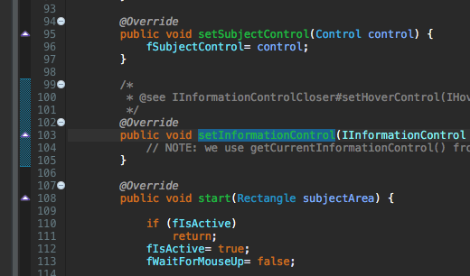
|
| Improved text operation icons for the dark theme |
The block selection, word warp and show whitespace icons have been adjusted to look good in the dark theme.
Before:
After:
|
| Improved text color in text editor for the dark theme |
The Text Editor now uses an improved font color in the dark theme so that you can read better.
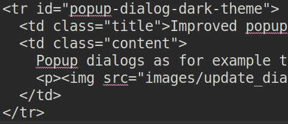
|
| Flat layout in tabbed properties view |
In the light theme the Tabbed Properties view now completely uses the same flat styling as the form-based editors do.
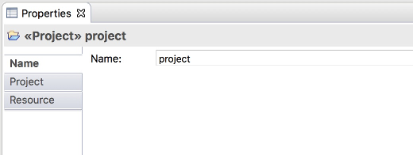
|
| Improved the text editor's expand and collapse nodes for the dark theme |
The collapse and expand nodes in the text editor's left hand side ruler were improved for the dark theme.
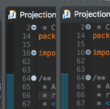
|
| Improved the generic editor's mark occurrences annotation color for the dark theme |
The occurrences annotation marker color in the generic editor's left hand side ruler were improved for the dark theme. Image is zoomed for better visibility.
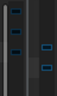
|
| Improved the generic editor's mark occurrences annotation label |
The occurrences annotation marker label has been improved to show the word occurring rather than the line. In the image below, see the difference between old label at the top and the new one at the bottom.
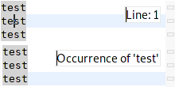
|
| Canvas elements are styled in the default dark theme |
The default dark theme now contains CSS for styling Canvas elements by default.
Old:
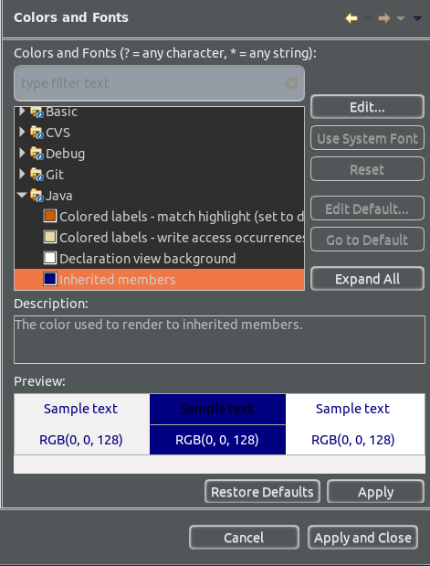
New:
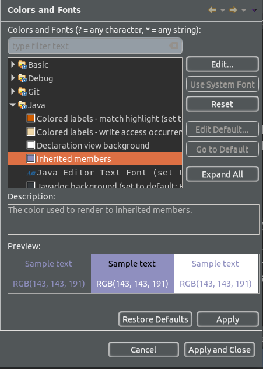
|
| Detach view or editor via its context menu |
You can now detach a view or an editor via its context menu.
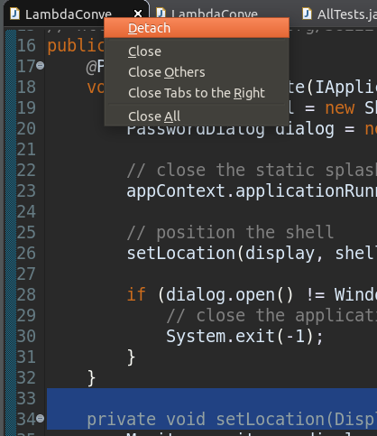
|
| Consistently use blue color for links in the dark theme |
Links now consistently use a light blue color in the dark theme. One example where this was very visible is PDE's manifest editor:
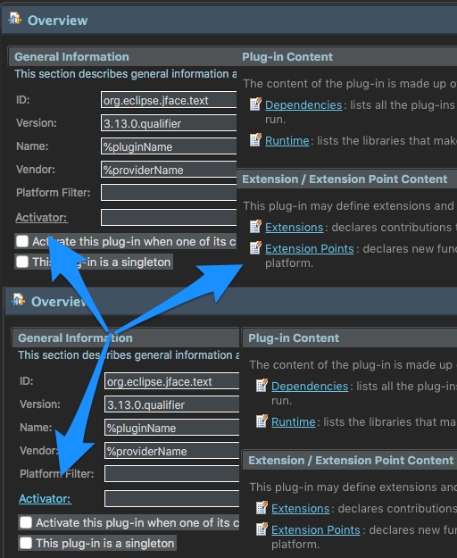
|
| Improved Tree and Table widget scaling at high DPI on Windows |
Trees and Tables scale Checkboxes and expand/collapse buttons properly.
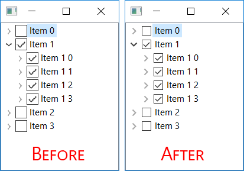
|
| GTK_THEME override support for SWT-GTK3 |
Eclipse SWT on GTK3.14+ now supports the use of GTK_THEME as an environment variable. SWT applications are correctly styled
when using the GTK_THEME environment variable to override the system theme, and/or specify a dark variant. Below are the before
and after screenshots of ControlExample running with GTK_THEME=Adwaita:dark set.
Before:
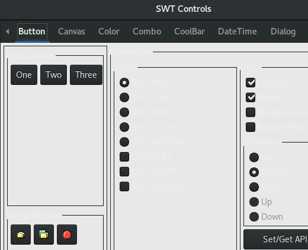
After:
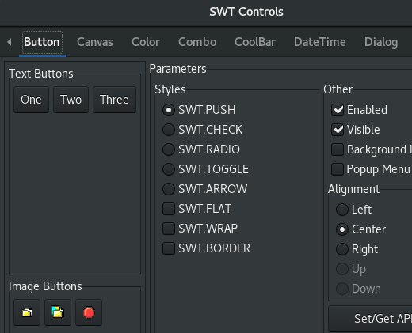
|
General Updates
|
| Accessibility support on GTK3 |
Significant improvements have been made in the Accessibility support on the SWT Linux/GTK3 port. Prior to Photon, accessibility support on GTK3 was limited and often led to assistive technologies not interacting properly with SWT.
In Photon, Eclipse on Linux is accessible again. Users are able to use assistive technologies seamlessly with SWT GTK3, just as they were able to with GTK2, and without any hangs or crashes.
|
| Refresh on access 'ON' by default |
For years the Eclipse IDE is shipping with a customization that files are automatically refreshed if the user accesses them.
But, other Eclipse based tools like the Spring Tools Suite were missing this customization.
Refresh file on access is now 'ON' by default, so the other Eclipse based tools do not have to manually instruct their IDE to see the update.
|
| Added e4 tools to SDK product |
The e4 tools for developing e4 based IDE and RCP components are now included in the SDK.
The tooling can be removed via the Installation Details dialog.
|
| Improved memory usage on SWT-GTK3 |
Eclipse SWT on GTK3 has reduced memory usage after resolving a memory leak in setBackground/setForeground Color machinery. The leak
was approximately 50MB/hour and affected clients running SWT on GTK3.14+.
|
| Ant 1.10.3 |
Eclipse has adopted Ant version 1.10.3.
|
| Lucene update |
Lucene bundles have been updated to version 7.0. The org.apache.lucene.misc bundle is not included as it's no longer needed by the Help system.
This new Lucene version comes with new index version thus clients providing prebuilt indexes have to rebuild them with Lucene 7.0 for the index to be used,
if the old version is supplied, Eclipse Help system will not use that index and generate a new one locally.
|
| Dropped support for Windows XP |
Eclipse has dropped support for the Windows XP Operating System and other Windows versions older than Windows Vista.
For more information, please read the announcement made by the Eclipse PMC.
|
| Dropped support for XULRunner |
Eclipse/SWT has dropped support for XULRunner as a browser rendering engine on all platforms.
|
| Removed CVS from SDK product |
CVS support is not included in the SDK anymore. The CVS feature can be installed from the platform update site.
|